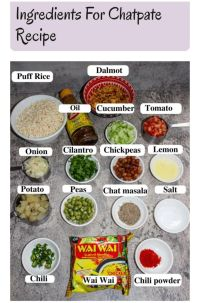
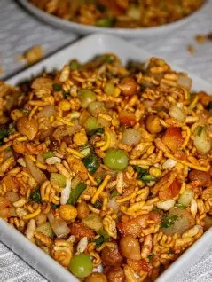

Nepali chatpatEy
chatpatEy is one of the most famous street food of Nepal.
if you are
looking for an easy nepali snack, try thise nepali chatpatEy recipe:

<
-
Wai wai
- Veg wai wai noodles
- Chiken wai wai noodles
-
Vegetables
-
Green vegetables
- Chilli chop
- Cilantro chop
- Cucumber chop
- Green peas
-
Normal vegetables
- Onion chop
- Tomato chop
- Boiled potatoes chop
- Boiled Chickpeas
-
Seasoning
- Chaat masala
- Red chilli powder
- Lemon juice
- Salt
-
Oil
-
Other
- Puffed rice
-
Spicy snacks

The yummy chatpatEy is ready to eat.
let's start!